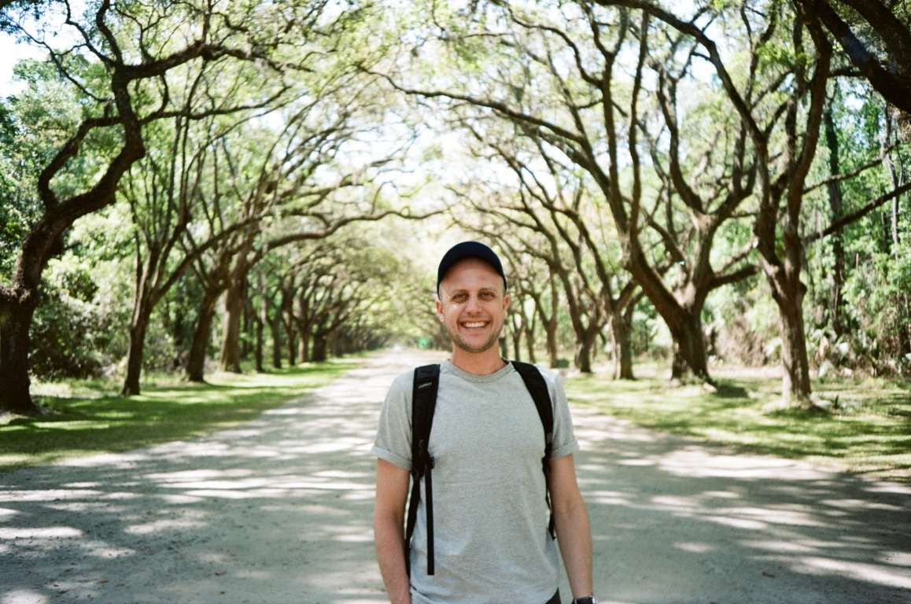

Information
I’m a technical writer and editor focused on cloud observability, infrastructure, and distributed systems. At Datadog, I created clear, useful content that helped technical audiences understand complex products and workflows. My work included technical documentation, engineering blog posts, email newsletters, and video scripting for product explainers and recurring series. I developed concepts, outlines, and scripts, and partnered with subject matter experts and stakeholders to deliver accurate, accessible content.
